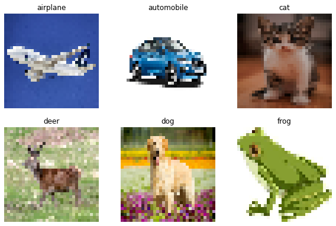

A Vision Transformer without Attention
Author: Aritra Roy Gosthipaty, Ritwik Raha, Shivalika Singh
Date created: 2022/02/24
Last modified: 2024/12/06
Description: A minimal implementation of ShiftViT.

Introduction
Vision Transformers (ViTs) have sparked a wave of research at the intersection of Transformers and Computer Vision (CV).
ViTs can simultaneously model long- and short-range dependencies, thanks to the Multi-Head Self-Attention mechanism in the Transformer block. Many researchers believe that the success of ViTs are purely due to the attention layer, and they seldom think about other parts of the ViT model.
In the academic paper When Shift Operation Meets Vision Transformer: An Extremely Simple Alternative to Attention Mechanism the authors propose to demystify the success of ViTs with the introduction of a NO PARAMETER operation in place of the attention operation. They swap the attention operation with a shifting operation.
In this example, we minimally implement the paper with close alignement to the author's official implementation.
This example requires TensorFlow 2.9 or higher.
Setup and imports
import numpy as np
import matplotlib.pyplot as plt
import keras
from keras import ops
from keras import layers
import tensorflow as tf
import pathlib
import glob
# Setting seed for reproducibiltiy
SEED = 42
keras.utils.set_random_seed(SEED)
Hyperparameters
These are the hyperparameters that we have chosen for the experiment. Please feel free to tune them.
class Config(object):
# DATA
batch_size = 256
buffer_size = batch_size * 2
input_shape = (32, 32, 3)
num_classes = 10
# AUGMENTATION
image_size = 48
# ARCHITECTURE
patch_size = 4
projected_dim = 96
num_shift_blocks_per_stages = [2, 4, 8, 2]
epsilon = 1e-5
stochastic_depth_rate = 0.2
mlp_dropout_rate = 0.2
num_div = 12
shift_pixel = 1
mlp_expand_ratio = 2
# OPTIMIZER
lr_start = 1e-5
lr_max = 1e-3
weight_decay = 1e-4
# TRAINING
epochs = 100
# INFERENCE
label_map = {
0: "airplane",
1: "automobile",
2: "bird",
3: "cat",
4: "deer",
5: "dog",
6: "frog",
7: "horse",
8: "ship",
9: "truck",
}
tf_ds_batch_size = 20
config = Config()
Load the CIFAR-10 dataset
We use the CIFAR-10 dataset for our experiments.
(x_train, y_train), (x_test, y_test) = keras.datasets.cifar10.load_data()
(x_train, y_train), (x_val, y_val) = (
(x_train[:40000], y_train[:40000]),
(x_train[40000:], y_train[40000:]),
)
print(f"Training samples: {len(x_train)}")
print(f"Validation samples: {len(x_val)}")
print(f"Testing samples: {len(x_test)}")
AUTO = tf.data.AUTOTUNE
train_ds = tf.data.Dataset.from_tensor_slices((x_train, y_train))
train_ds = train_ds.shuffle(config.buffer_size).batch(config.batch_size).prefetch(AUTO)
val_ds = tf.data.Dataset.from_tensor_slices((x_val, y_val))
val_ds = val_ds.batch(config.batch_size).prefetch(AUTO)
test_ds = tf.data.Dataset.from_tensor_slices((x_test, y_test))
test_ds = test_ds.batch(config.batch_size).prefetch(AUTO)
Downloading data from https://www.cs.toronto.edu/~kriz/cifar-10-python.tar.gz
170498071/170498071 [==============================] - 3s 0us/step
Training samples: 40000
Validation samples: 10000
Testing samples: 10000
Data Augmentation
The augmentation pipeline consists of:
- Rescaling
- Resizing
- Random cropping
- Random horizontal flipping
Note: The image data augmentation layers do not apply
data transformations at inference time. This means that
when these layers are called with training=False they
behave differently. Refer to the
documentation
for more details.
def get_augmentation_model():
"""Build the data augmentation model."""
data_augmentation = keras.Sequential(
[
layers.Resizing(config.input_shape[0] + 20, config.input_shape[0] + 20),
layers.RandomCrop(config.image_size, config.image_size),
layers.RandomFlip("horizontal"),
layers.Rescaling(1 / 255.0),
]
)
return data_augmentation
The ShiftViT architecture
In this section, we build the architecture proposed in the ShiftViT paper.
 |
|---|
| Figure 1: The entire architecutre of ShiftViT. |
| Source |
The architecture as shown in Fig. 1, is inspired by Swin Transformer: Hierarchical Vision Transformer using Shifted Windows. Here the authors propose a modular architecture with 4 stages. Each stage works on its own spatial size, creating a hierarchical architecture.
An input image of size HxWx3 is split into non-overlapping patches of size 4x4.
This is done via the patchify layer which results in individual tokens of feature size 48
(4x4x3). Each stage comprises two parts:
- Embedding Generation
- Stacked Shift Blocks
We discuss the stages and the modules in detail in what follows.
Note: Compared to the official implementation we restructure some key components to better fit the Keras API.
The ShiftViT Block
 |
|---|
| Figure 2: From the Model to a Shift Block. |
Each stage in the ShiftViT architecture comprises of a Shift Block as shown in Fig 2.
 |
|---|
| Figure 3: The Shift ViT Block. Source |
The Shift Block as shown in Fig. 3, comprises of the following:
- Shift Operation
- Linear Normalization
- MLP Layer
The MLP block
The MLP block is intended to be a stack of densely-connected layers
class MLP(layers.Layer):
"""Get the MLP layer for each shift block.
Args:
mlp_expand_ratio (int): The ratio with which the first feature map is expanded.
mlp_dropout_rate (float): The rate for dropout.
"""
def __init__(self, mlp_expand_ratio, mlp_dropout_rate, **kwargs):
super().__init__(**kwargs)
self.mlp_expand_ratio = mlp_expand_ratio
self.mlp_dropout_rate = mlp_dropout_rate
def build(self, input_shape):
input_channels = input_shape[-1]
initial_filters = int(self.mlp_expand_ratio * input_channels)
self.mlp = keras.Sequential(
[
layers.Dense(
units=initial_filters,
activation="gelu",
),
layers.Dropout(rate=self.mlp_dropout_rate),
layers.Dense(units=input_channels),
layers.Dropout(rate=self.mlp_dropout_rate),
]
)
def call(self, x):
x = self.mlp(x)
return x
The DropPath layer
Stochastic depth is a regularization technique that randomly drops a set of layers. During inference, the layers are kept as they are. It is very similar to Dropout, but it operates on a block of layers rather than on individual nodes present inside a layer.
class DropPath(layers.Layer):
"""Drop Path also known as the Stochastic Depth layer.
Refernece:
- https://keras.io/examples/vision/cct/#stochastic-depth-for-regularization
- github.com:rwightman/pytorch-image-models
"""
def __init__(self, drop_path_prob, **kwargs):
super().__init__(**kwargs)
self.drop_path_prob = drop_path_prob
self.seed_generator = keras.random.SeedGenerator(1337)
def call(self, x, training=False):
if training:
keep_prob = 1 - self.drop_path_prob
shape = (ops.shape(x)[0],) + (1,) * (len(ops.shape(x)) - 1)
random_tensor = keep_prob + keras.random.uniform(
shape, 0, 1, seed=self.seed_generator
)
random_tensor = ops.floor(random_tensor)
return (x / keep_prob) * random_tensor
return x
Block
The most important operation in this paper is the shift operation. In this section, we describe the shift operation and compare it with its original implementation provided by the authors.
A generic feature map is assumed to have the shape [N, H, W, C]. Here we choose a
num_div parameter that decides the division size of the channels. The first 4 divisions
are shifted (1 pixel) in the left, right, up, and down direction. The remaining splits
are kept as is. After partial shifting the shifted channels are padded and the overflown
pixels are chopped off. This completes the partial shifting operation.
In the original implementation, the code is approximately:
out[:, g * 0:g * 1, :, :-1] = x[:, g * 0:g * 1, :, 1:] # shift left
out[:, g * 1:g * 2, :, 1:] = x[:, g * 1:g * 2, :, :-1] # shift right
out[:, g * 2:g * 3, :-1, :] = x[:, g * 2:g * 3, 1:, :] # shift up
out[:, g * 3:g * 4, 1:, :] = x[:, g * 3:g * 4, :-1, :] # shift down
out[:, g * 4:, :, :] = x[:, g * 4:, :, :] # no shift
In TensorFlow it would be infeasible for us to assign shifted channels to a tensor in the middle of the training process. This is why we have resorted to the following procedure:
- Split the channels with the
num_divparameter. - Select each of the first four spilts and shift and pad them in the respective directions.
- After shifting and padding, we concatenate the channel back.
 |
|---|
| Figure 4: The TensorFlow style shifting |
The entire procedure is explained in the Fig. 4.
class ShiftViTBlock(layers.Layer):
"""A unit ShiftViT Block
Args:
shift_pixel (int): The number of pixels to shift. Default to 1.
mlp_expand_ratio (int): The ratio with which MLP features are
expanded. Default to 2.
mlp_dropout_rate (float): The dropout rate used in MLP.
num_div (int): The number of divisions of the feature map's channel.
Totally, 4/num_div of channels will be shifted. Defaults to 12.
epsilon (float): Epsilon constant.
drop_path_prob (float): The drop probability for drop path.
"""
def __init__(
self,
epsilon,
drop_path_prob,
mlp_dropout_rate,
num_div=12,
shift_pixel=1,
mlp_expand_ratio=2,
**kwargs,
):
super().__init__(**kwargs)
self.shift_pixel = shift_pixel
self.mlp_expand_ratio = mlp_expand_ratio
self.mlp_dropout_rate = mlp_dropout_rate
self.num_div = num_div
self.epsilon = epsilon
self.drop_path_prob = drop_path_prob
def build(self, input_shape):
self.H = input_shape[1]
self.W = input_shape[2]
self.C = input_shape[3]
self.layer_norm = layers.LayerNormalization(epsilon=self.epsilon)
self.drop_path = (
DropPath(drop_path_prob=self.drop_path_prob)
if self.drop_path_prob > 0.0
else layers.Activation("linear")
)
self.mlp = MLP(
mlp_expand_ratio=self.mlp_expand_ratio,
mlp_dropout_rate=self.mlp_dropout_rate,
)
def get_shift_pad(self, x, mode):
"""Shifts the channels according to the mode chosen."""
if mode == "left":
offset_height = 0
offset_width = 0
target_height = 0
target_width = self.shift_pixel
elif mode == "right":
offset_height = 0
offset_width = self.shift_pixel
target_height = 0
target_width = self.shift_pixel
elif mode == "up":
offset_height = 0
offset_width = 0
target_height = self.shift_pixel
target_width = 0
else:
offset_height = self.shift_pixel
offset_width = 0
target_height = self.shift_pixel
target_width = 0
crop = ops.image.crop_images(
x,
top_cropping=offset_height,
left_cropping=offset_width,
target_height=self.H - target_height,
target_width=self.W - target_width,
)
shift_pad = ops.image.pad_images(
crop,
top_padding=offset_height,
left_padding=offset_width,
target_height=self.H,
target_width=self.W,
)
return shift_pad
def call(self, x, training=False):
# Split the feature maps
x_splits = ops.split(x, indices_or_sections=self.C // self.num_div, axis=-1)
# Shift the feature maps
x_splits[0] = self.get_shift_pad(x_splits[0], mode="left")
x_splits[1] = self.get_shift_pad(x_splits[1], mode="right")
x_splits[2] = self.get_shift_pad(x_splits[2], mode="up")
x_splits[3] = self.get_shift_pad(x_splits[3], mode="down")
# Concatenate the shifted and unshifted feature maps
x = ops.concatenate(x_splits, axis=-1)
# Add the residual connection
shortcut = x
x = shortcut + self.drop_path(self.mlp(self.layer_norm(x)), training=training)
return x
The ShiftViT blocks
 |
|---|
| Figure 5: Shift Blocks in the architecture. Source |
Each stage of the architecture has shift blocks as shown in Fig.5. Each of these blocks contain a variable number of stacked ShiftViT block (as built in the earlier section).
Shift blocks are followed by a PatchMerging layer that scales down feature inputs. The PatchMerging layer helps in the pyramidal structure of the model.
The PatchMerging layer
This layer merges the two adjacent tokens. This layer helps in scaling the features down spatially and increasing the features up channel wise. We use a Conv2D layer to merge the patches.
class PatchMerging(layers.Layer):
"""The Patch Merging layer.
Args:
epsilon (float): The epsilon constant.
"""
def __init__(self, epsilon, **kwargs):
super().__init__(**kwargs)
self.epsilon = epsilon
def build(self, input_shape):
filters = 2 * input_shape[-1]
self.reduction = layers.Conv2D(
filters=filters, kernel_size=2, strides=2, padding="same", use_bias=False
)
self.layer_norm = layers.LayerNormalization(epsilon=self.epsilon)
def call(self, x):
# Apply the patch merging algorithm on the feature maps
x = self.layer_norm(x)
x = self.reduction(x)
return x
Stacked Shift Blocks
Each stage will have a variable number of stacked ShiftViT Blocks, as suggested in the paper. This is a generic layer that will contain the stacked shift vit blocks with the patch merging layer as well. Combining the two operations (shift ViT block and patch merging) is a design choice we picked for better code reusability.
# Note: This layer will have a different depth of stacking
# for different stages on the model.
class StackedShiftBlocks(layers.Layer):
"""The layer containing stacked ShiftViTBlocks.
Args:
epsilon (float): The epsilon constant.
mlp_dropout_rate (float): The dropout rate used in the MLP block.
num_shift_blocks (int): The number of shift vit blocks for this stage.
stochastic_depth_rate (float): The maximum drop path rate chosen.
is_merge (boolean): A flag that determines the use of the Patch Merge
layer after the shift vit blocks.
num_div (int): The division of channels of the feature map. Defaults to 12.
shift_pixel (int): The number of pixels to shift. Defaults to 1.
mlp_expand_ratio (int): The ratio with which the initial dense layer of
the MLP is expanded Defaults to 2.
"""
def __init__(
self,
epsilon,
mlp_dropout_rate,
num_shift_blocks,
stochastic_depth_rate,
is_merge,
num_div=12,
shift_pixel=1,
mlp_expand_ratio=2,
**kwargs,
):
super().__init__(**kwargs)
self.epsilon = epsilon
self.mlp_dropout_rate = mlp_dropout_rate
self.num_shift_blocks = num_shift_blocks
self.stochastic_depth_rate = stochastic_depth_rate
self.is_merge = is_merge
self.num_div = num_div
self.shift_pixel = shift_pixel
self.mlp_expand_ratio = mlp_expand_ratio
def build(self, input_shapes):
# Calculate stochastic depth probabilities.
# Reference: https://keras.io/examples/vision/cct/#the-final-cct-model
dpr = [
x
for x in np.linspace(
start=0, stop=self.stochastic_depth_rate, num=self.num_shift_blocks
)
]
# Build the shift blocks as a list of ShiftViT Blocks
self.shift_blocks = list()
for num in range(self.num_shift_blocks):
self.shift_blocks.append(
ShiftViTBlock(
num_div=self.num_div,
epsilon=self.epsilon,
drop_path_prob=dpr[num],
mlp_dropout_rate=self.mlp_dropout_rate,
shift_pixel=self.shift_pixel,
mlp_expand_ratio=self.mlp_expand_ratio,
)
)
if self.is_merge:
self.patch_merge = PatchMerging(epsilon=self.epsilon)
def call(self, x, training=False):
for shift_block in self.shift_blocks:
x = shift_block(x, training=training)
if self.is_merge:
x = self.patch_merge(x)
return x
# Since this is a custom layer, we need to overwrite get_config()
# so that model can be easily saved & loaded after training
def get_config(self):
config = super().get_config()
config.update(
{
"epsilon": self.epsilon,
"mlp_dropout_rate": self.mlp_dropout_rate,
"num_shift_blocks": self.num_shift_blocks,
"stochastic_depth_rate": self.stochastic_depth_rate,
"is_merge": self.is_merge,
"num_div": self.num_div,
"shift_pixel": self.shift_pixel,
"mlp_expand_ratio": self.mlp_expand_ratio,
}
)
return config
The ShiftViT model
Build the ShiftViT custom model.
class ShiftViTModel(keras.Model):
"""The ShiftViT Model.
Args:
data_augmentation (keras.Model): A data augmentation model.
projected_dim (int): The dimension to which the patches of the image are
projected.
patch_size (int): The patch size of the images.
num_shift_blocks_per_stages (list[int]): A list of all the number of shit
blocks per stage.
epsilon (float): The epsilon constant.
mlp_dropout_rate (float): The dropout rate used in the MLP block.
stochastic_depth_rate (float): The maximum drop rate probability.
num_div (int): The number of divisions of the channesl of the feature
map. Defaults to 12.
shift_pixel (int): The number of pixel to shift. Default to 1.
mlp_expand_ratio (int): The ratio with which the initial mlp dense layer
is expanded to. Defaults to 2.
"""
def __init__(
self,
data_augmentation,
projected_dim,
patch_size,
num_shift_blocks_per_stages,
epsilon,
mlp_dropout_rate,
stochastic_depth_rate,
num_div=12,
shift_pixel=1,
mlp_expand_ratio=2,
**kwargs,
):
super().__init__(**kwargs)
self.data_augmentation = data_augmentation
self.patch_projection = layers.Conv2D(
filters=projected_dim,
kernel_size=patch_size,
strides=patch_size,
padding="same",
)
self.stages = list()
for index, num_shift_blocks in enumerate(num_shift_blocks_per_stages):
if index == len(num_shift_blocks_per_stages) - 1:
# This is the last stage, do not use the patch merge here.
is_merge = False
else:
is_merge = True
# Build the stages.
self.stages.append(
StackedShiftBlocks(
epsilon=epsilon,
mlp_dropout_rate=mlp_dropout_rate,
num_shift_blocks=num_shift_blocks,
stochastic_depth_rate=stochastic_depth_rate,
is_merge=is_merge,
num_div=num_div,
shift_pixel=shift_pixel,
mlp_expand_ratio=mlp_expand_ratio,
)
)
self.global_avg_pool = layers.GlobalAveragePooling2D()
self.classifier = layers.Dense(config.num_classes)
def get_config(self):
config = super().get_config()
config.update(
{
"data_augmentation": self.data_augmentation,
"patch_projection": self.patch_projection,
"stages": self.stages,
"global_avg_pool": self.global_avg_pool,
"classifier": self.classifier,
}
)
return config
def _calculate_loss(self, data, training=False):
(images, labels) = data
# Augment the images
augmented_images = self.data_augmentation(images, training=training)
# Create patches and project the pathces.
projected_patches = self.patch_projection(augmented_images)
# Pass through the stages
x = projected_patches
for stage in self.stages:
x = stage(x, training=training)
# Get the logits.
x = self.global_avg_pool(x)
logits = self.classifier(x)
# Calculate the loss and return it.
total_loss = self.compiled_loss(labels, logits)
return total_loss, labels, logits
def train_step(self, inputs):
with tf.GradientTape() as tape:
total_loss, labels, logits = self._calculate_loss(
data=inputs, training=True
)
# Apply gradients.
train_vars = [
self.data_augmentation.trainable_variables,
self.patch_projection.trainable_variables,
self.global_avg_pool.trainable_variables,
self.classifier.trainable_variables,
]
train_vars = train_vars + [stage.trainable_variables for stage in self.stages]
# Optimize the gradients.
grads = tape.gradient(total_loss, train_vars)
trainable_variable_list = []
for (grad, var) in zip(grads, train_vars):
for g, v in zip(grad, var):
trainable_variable_list.append((g, v))
self.optimizer.apply_gradients(trainable_variable_list)
# Update the metrics
self.compiled_metrics.update_state(labels, logits)
return {m.name: m.result() for m in self.metrics}
def test_step(self, data):
_, labels, logits = self._calculate_loss(data=data, training=False)
# Update the metrics
self.compiled_metrics.update_state(labels, logits)
return {m.name: m.result() for m in self.metrics}
def call(self, images):
augmented_images = self.data_augmentation(images)
x = self.patch_projection(augmented_images)
for stage in self.stages:
x = stage(x, training=False)
x = self.global_avg_pool(x)
logits = self.classifier(x)
return logits
Instantiate the model
model = ShiftViTModel(
data_augmentation=get_augmentation_model(),
projected_dim=config.projected_dim,
patch_size=config.patch_size,
num_shift_blocks_per_stages=config.num_shift_blocks_per_stages,
epsilon=config.epsilon,
mlp_dropout_rate=config.mlp_dropout_rate,
stochastic_depth_rate=config.stochastic_depth_rate,
num_div=config.num_div,
shift_pixel=config.shift_pixel,
mlp_expand_ratio=config.mlp_expand_ratio,
)
Learning rate schedule
In many experiments, we want to warm up the model with a slowly increasing learning rate and then cool down the model with a slowly decaying learning rate. In the warmup cosine decay, the learning rate linearly increases for the warmup steps and then decays with a cosine decay.
# Some code is taken from:
# https://www.kaggle.com/ashusma/training-rfcx-tensorflow-tpu-effnet-b2.
class WarmUpCosine(keras.optimizers.schedules.LearningRateSchedule):
"""A LearningRateSchedule that uses a warmup cosine decay schedule."""
def __init__(self, lr_start, lr_max, warmup_steps, total_steps):
"""
Args:
lr_start: The initial learning rate
lr_max: The maximum learning rate to which lr should increase to in
the warmup steps
warmup_steps: The number of steps for which the model warms up
total_steps: The total number of steps for the model training
"""
super().__init__()
self.lr_start = lr_start
self.lr_max = lr_max
self.warmup_steps = warmup_steps
self.total_steps = total_steps
self.pi = ops.array(np.pi)
def __call__(self, step):
# Check whether the total number of steps is larger than the warmup
# steps. If not, then throw a value error.
if self.total_steps < self.warmup_steps:
raise ValueError(
f"Total number of steps {self.total_steps} must be"
+ f"larger or equal to warmup steps {self.warmup_steps}."
)
# `cos_annealed_lr` is a graph that increases to 1 from the initial
# step to the warmup step. After that this graph decays to -1 at the
# final step mark.
cos_annealed_lr = ops.cos(
self.pi
* (ops.cast(step, dtype="float32") - self.warmup_steps)
/ ops.cast(self.total_steps - self.warmup_steps, dtype="float32")
)
# Shift the mean of the `cos_annealed_lr` graph to 1. Now the grpah goes
# from 0 to 2. Normalize the graph with 0.5 so that now it goes from 0
# to 1. With the normalized graph we scale it with `lr_max` such that
# it goes from 0 to `lr_max`
learning_rate = 0.5 * self.lr_max * (1 + cos_annealed_lr)
# Check whether warmup_steps is more than 0.
if self.warmup_steps > 0:
# Check whether lr_max is larger that lr_start. If not, throw a value
# error.
if self.lr_max < self.lr_start:
raise ValueError(
f"lr_start {self.lr_start} must be smaller or"
+ f"equal to lr_max {self.lr_max}."
)
# Calculate the slope with which the learning rate should increase
# in the warumup schedule. The formula for slope is m = ((b-a)/steps)
slope = (self.lr_max - self.lr_start) / self.warmup_steps
# With the formula for a straight line (y = mx+c) build the warmup
# schedule
warmup_rate = slope * ops.cast(step, dtype="float32") + self.lr_start
# When the current step is lesser that warmup steps, get the line
# graph. When the current step is greater than the warmup steps, get
# the scaled cos graph.
learning_rate = ops.where(
step < self.warmup_steps, warmup_rate, learning_rate
)
# When the current step is more that the total steps, return 0 else return
# the calculated graph.
return ops.where(step > self.total_steps, 0.0, learning_rate)
def get_config(self):
config = {
"lr_start": self.lr_start,
"lr_max": self.lr_max,
"total_steps": self.total_steps,
"warmup_steps": self.warmup_steps,
}
return config
Compile and train the model
# pass sample data to the model so that input shape is available at the time of
# saving the model
sample_ds, _ = next(iter(train_ds))
model(sample_ds, training=False)
# Get the total number of steps for training.
total_steps = int((len(x_train) / config.batch_size) * config.epochs)
# Calculate the number of steps for warmup.
warmup_epoch_percentage = 0.15
warmup_steps = int(total_steps * warmup_epoch_percentage)
# Initialize the warmupcosine schedule.
scheduled_lrs = WarmUpCosine(
lr_start=1e-5,
lr_max=1e-3,
warmup_steps=warmup_steps,
total_steps=total_steps,
)
# Get the optimizer.
optimizer = keras.optimizers.AdamW(
learning_rate=scheduled_lrs, weight_decay=config.weight_decay
)
# Compile and pretrain the model.
model.compile(
optimizer=optimizer,
loss=keras.losses.SparseCategoricalCrossentropy(from_logits=True),
metrics=[
keras.metrics.SparseCategoricalAccuracy(name="accuracy"),
keras.metrics.SparseTopKCategoricalAccuracy(5, name="top-5-accuracy"),
],
)
# Train the model
history = model.fit(
train_ds,
epochs=config.epochs,
validation_data=val_ds,
callbacks=[
keras.callbacks.EarlyStopping(
monitor="val_accuracy",
patience=5,
mode="auto",
)
],
)
# Evaluate the model with the test dataset.
print("TESTING")
loss, acc_top1, acc_top5 = model.evaluate(test_ds)
print(f"Loss: {loss:0.2f}")
print(f"Top 1 test accuracy: {acc_top1*100:0.2f}%")
print(f"Top 5 test accuracy: {acc_top5*100:0.2f}%")
Epoch 1/100
157/157 [==============================] - 72s 332ms/step - loss: 2.3844 - accuracy: 0.1444 - top-5-accuracy: 0.6051 - val_loss: 2.0984 - val_accuracy: 0.2610 - val_top-5-accuracy: 0.7638
Epoch 2/100
157/157 [==============================] - 49s 314ms/step - loss: 1.9457 - accuracy: 0.2893 - top-5-accuracy: 0.8103 - val_loss: 1.9459 - val_accuracy: 0.3356 - val_top-5-accuracy: 0.8614
Epoch 3/100
157/157 [==============================] - 50s 316ms/step - loss: 1.7093 - accuracy: 0.3810 - top-5-accuracy: 0.8761 - val_loss: 1.5349 - val_accuracy: 0.4585 - val_top-5-accuracy: 0.9045
Epoch 4/100
157/157 [==============================] - 49s 315ms/step - loss: 1.5473 - accuracy: 0.4374 - top-5-accuracy: 0.9090 - val_loss: 1.4257 - val_accuracy: 0.4862 - val_top-5-accuracy: 0.9298
Epoch 5/100
157/157 [==============================] - 50s 316ms/step - loss: 1.4316 - accuracy: 0.4816 - top-5-accuracy: 0.9243 - val_loss: 1.4032 - val_accuracy: 0.5092 - val_top-5-accuracy: 0.9362
Epoch 6/100
157/157 [==============================] - 50s 316ms/step - loss: 1.3588 - accuracy: 0.5131 - top-5-accuracy: 0.9333 - val_loss: 1.2893 - val_accuracy: 0.5411 - val_top-5-accuracy: 0.9457
Epoch 7/100
157/157 [==============================] - 50s 316ms/step - loss: 1.2894 - accuracy: 0.5385 - top-5-accuracy: 0.9410 - val_loss: 1.2922 - val_accuracy: 0.5416 - val_top-5-accuracy: 0.9432
Epoch 8/100
157/157 [==============================] - 49s 315ms/step - loss: 1.2388 - accuracy: 0.5568 - top-5-accuracy: 0.9468 - val_loss: 1.2100 - val_accuracy: 0.5733 - val_top-5-accuracy: 0.9545
Epoch 9/100
157/157 [==============================] - 49s 315ms/step - loss: 1.2043 - accuracy: 0.5698 - top-5-accuracy: 0.9491 - val_loss: 1.2166 - val_accuracy: 0.5675 - val_top-5-accuracy: 0.9520
Epoch 10/100
157/157 [==============================] - 49s 315ms/step - loss: 1.1694 - accuracy: 0.5861 - top-5-accuracy: 0.9528 - val_loss: 1.1738 - val_accuracy: 0.5883 - val_top-5-accuracy: 0.9541
Epoch 11/100
157/157 [==============================] - 50s 316ms/step - loss: 1.1290 - accuracy: 0.5994 - top-5-accuracy: 0.9575 - val_loss: 1.1161 - val_accuracy: 0.6064 - val_top-5-accuracy: 0.9618
Epoch 12/100
157/157 [==============================] - 50s 316ms/step - loss: 1.0861 - accuracy: 0.6157 - top-5-accuracy: 0.9602 - val_loss: 1.1220 - val_accuracy: 0.6133 - val_top-5-accuracy: 0.9576
Epoch 13/100
157/157 [==============================] - 49s 315ms/step - loss: 1.0766 - accuracy: 0.6178 - top-5-accuracy: 0.9612 - val_loss: 1.0108 - val_accuracy: 0.6402 - val_top-5-accuracy: 0.9681
Epoch 14/100
157/157 [==============================] - 49s 315ms/step - loss: 1.0179 - accuracy: 0.6416 - top-5-accuracy: 0.9658 - val_loss: 1.0196 - val_accuracy: 0.6405 - val_top-5-accuracy: 0.9667
Epoch 15/100
157/157 [==============================] - 50s 316ms/step - loss: 1.0028 - accuracy: 0.6470 - top-5-accuracy: 0.9678 - val_loss: 1.0113 - val_accuracy: 0.6415 - val_top-5-accuracy: 0.9672
Epoch 16/100
157/157 [==============================] - 50s 316ms/step - loss: 0.9613 - accuracy: 0.6611 - top-5-accuracy: 0.9710 - val_loss: 1.0516 - val_accuracy: 0.6406 - val_top-5-accuracy: 0.9596
Epoch 17/100
157/157 [==============================] - 50s 316ms/step - loss: 0.9262 - accuracy: 0.6740 - top-5-accuracy: 0.9729 - val_loss: 0.9010 - val_accuracy: 0.6844 - val_top-5-accuracy: 0.9750
Epoch 18/100
157/157 [==============================] - 50s 316ms/step - loss: 0.8768 - accuracy: 0.6916 - top-5-accuracy: 0.9769 - val_loss: 0.8862 - val_accuracy: 0.6908 - val_top-5-accuracy: 0.9767
Epoch 19/100
157/157 [==============================] - 49s 315ms/step - loss: 0.8595 - accuracy: 0.6984 - top-5-accuracy: 0.9768 - val_loss: 0.8732 - val_accuracy: 0.6982 - val_top-5-accuracy: 0.9738
Epoch 20/100
157/157 [==============================] - 50s 317ms/step - loss: 0.8252 - accuracy: 0.7103 - top-5-accuracy: 0.9793 - val_loss: 0.9330 - val_accuracy: 0.6745 - val_top-5-accuracy: 0.9718
Epoch 21/100
157/157 [==============================] - 51s 322ms/step - loss: 0.8003 - accuracy: 0.7180 - top-5-accuracy: 0.9814 - val_loss: 0.8912 - val_accuracy: 0.6948 - val_top-5-accuracy: 0.9728
Epoch 22/100
157/157 [==============================] - 51s 326ms/step - loss: 0.7651 - accuracy: 0.7317 - top-5-accuracy: 0.9829 - val_loss: 0.7894 - val_accuracy: 0.7277 - val_top-5-accuracy: 0.9791
Epoch 23/100
157/157 [==============================] - 52s 328ms/step - loss: 0.7372 - accuracy: 0.7415 - top-5-accuracy: 0.9843 - val_loss: 0.7752 - val_accuracy: 0.7284 - val_top-5-accuracy: 0.9804
Epoch 24/100
157/157 [==============================] - 51s 327ms/step - loss: 0.7324 - accuracy: 0.7423 - top-5-accuracy: 0.9852 - val_loss: 0.7949 - val_accuracy: 0.7340 - val_top-5-accuracy: 0.9792
Epoch 25/100
157/157 [==============================] - 51s 323ms/step - loss: 0.7051 - accuracy: 0.7512 - top-5-accuracy: 0.9858 - val_loss: 0.7967 - val_accuracy: 0.7280 - val_top-5-accuracy: 0.9787
Epoch 26/100
157/157 [==============================] - 51s 323ms/step - loss: 0.6832 - accuracy: 0.7577 - top-5-accuracy: 0.9870 - val_loss: 0.7840 - val_accuracy: 0.7322 - val_top-5-accuracy: 0.9807
Epoch 27/100
157/157 [==============================] - 51s 322ms/step - loss: 0.6609 - accuracy: 0.7654 - top-5-accuracy: 0.9877 - val_loss: 0.7447 - val_accuracy: 0.7434 - val_top-5-accuracy: 0.9816
Epoch 28/100
157/157 [==============================] - 50s 319ms/step - loss: 0.6495 - accuracy: 0.7724 - top-5-accuracy: 0.9883 - val_loss: 0.7885 - val_accuracy: 0.7280 - val_top-5-accuracy: 0.9817
Epoch 29/100
157/157 [==============================] - 50s 317ms/step - loss: 0.6491 - accuracy: 0.7707 - top-5-accuracy: 0.9885 - val_loss: 0.7539 - val_accuracy: 0.7458 - val_top-5-accuracy: 0.9821
Epoch 30/100
157/157 [==============================] - 50s 317ms/step - loss: 0.6213 - accuracy: 0.7823 - top-5-accuracy: 0.9888 - val_loss: 0.7571 - val_accuracy: 0.7470 - val_top-5-accuracy: 0.9815
Epoch 31/100
157/157 [==============================] - 50s 318ms/step - loss: 0.5976 - accuracy: 0.7902 - top-5-accuracy: 0.9906 - val_loss: 0.7430 - val_accuracy: 0.7508 - val_top-5-accuracy: 0.9817
Epoch 32/100
157/157 [==============================] - 50s 318ms/step - loss: 0.5932 - accuracy: 0.7898 - top-5-accuracy: 0.9910 - val_loss: 0.7545 - val_accuracy: 0.7469 - val_top-5-accuracy: 0.9793
Epoch 33/100
157/157 [==============================] - 50s 318ms/step - loss: 0.5977 - accuracy: 0.7850 - top-5-accuracy: 0.9913 - val_loss: 0.7200 - val_accuracy: 0.7569 - val_top-5-accuracy: 0.9830
Epoch 34/100
157/157 [==============================] - 50s 317ms/step - loss: 0.5552 - accuracy: 0.8041 - top-5-accuracy: 0.9920 - val_loss: 0.7377 - val_accuracy: 0.7552 - val_top-5-accuracy: 0.9818
Epoch 35/100
157/157 [==============================] - 50s 319ms/step - loss: 0.5509 - accuracy: 0.8056 - top-5-accuracy: 0.9921 - val_loss: 0.8125 - val_accuracy: 0.7331 - val_top-5-accuracy: 0.9782
Epoch 36/100
157/157 [==============================] - 50s 317ms/step - loss: 0.5296 - accuracy: 0.8116 - top-5-accuracy: 0.9933 - val_loss: 0.6900 - val_accuracy: 0.7680 - val_top-5-accuracy: 0.9849
Epoch 37/100
157/157 [==============================] - 50s 316ms/step - loss: 0.5151 - accuracy: 0.8170 - top-5-accuracy: 0.9941 - val_loss: 0.7275 - val_accuracy: 0.7610 - val_top-5-accuracy: 0.9841
Epoch 38/100
157/157 [==============================] - 50s 317ms/step - loss: 0.5069 - accuracy: 0.8217 - top-5-accuracy: 0.9936 - val_loss: 0.7067 - val_accuracy: 0.7703 - val_top-5-accuracy: 0.9835
Epoch 39/100
157/157 [==============================] - 50s 318ms/step - loss: 0.4771 - accuracy: 0.8304 - top-5-accuracy: 0.9945 - val_loss: 0.7110 - val_accuracy: 0.7668 - val_top-5-accuracy: 0.9836
Epoch 40/100
157/157 [==============================] - 50s 317ms/step - loss: 0.4675 - accuracy: 0.8350 - top-5-accuracy: 0.9956 - val_loss: 0.7130 - val_accuracy: 0.7688 - val_top-5-accuracy: 0.9829
Epoch 41/100
157/157 [==============================] - 50s 319ms/step - loss: 0.4586 - accuracy: 0.8382 - top-5-accuracy: 0.9959 - val_loss: 0.7331 - val_accuracy: 0.7598 - val_top-5-accuracy: 0.9806
Epoch 42/100
157/157 [==============================] - 50s 318ms/step - loss: 0.4558 - accuracy: 0.8380 - top-5-accuracy: 0.9959 - val_loss: 0.7187 - val_accuracy: 0.7722 - val_top-5-accuracy: 0.9832
Epoch 43/100
157/157 [==============================] - 50s 320ms/step - loss: 0.4356 - accuracy: 0.8450 - top-5-accuracy: 0.9958 - val_loss: 0.7162 - val_accuracy: 0.7693 - val_top-5-accuracy: 0.9850
Epoch 44/100
157/157 [==============================] - 49s 314ms/step - loss: 0.4425 - accuracy: 0.8433 - top-5-accuracy: 0.9958 - val_loss: 0.7061 - val_accuracy: 0.7698 - val_top-5-accuracy: 0.9853
Epoch 45/100
157/157 [==============================] - 49s 314ms/step - loss: 0.4072 - accuracy: 0.8551 - top-5-accuracy: 0.9967 - val_loss: 0.7025 - val_accuracy: 0.7820 - val_top-5-accuracy: 0.9848
Epoch 46/100
157/157 [==============================] - 49s 314ms/step - loss: 0.3865 - accuracy: 0.8644 - top-5-accuracy: 0.9970 - val_loss: 0.7178 - val_accuracy: 0.7740 - val_top-5-accuracy: 0.9844
Epoch 47/100
157/157 [==============================] - 49s 313ms/step - loss: 0.3718 - accuracy: 0.8694 - top-5-accuracy: 0.9973 - val_loss: 0.7216 - val_accuracy: 0.7768 - val_top-5-accuracy: 0.9828
Epoch 48/100
157/157 [==============================] - 49s 314ms/step - loss: 0.3733 - accuracy: 0.8673 - top-5-accuracy: 0.9970 - val_loss: 0.7440 - val_accuracy: 0.7713 - val_top-5-accuracy: 0.9841
Epoch 49/100
157/157 [==============================] - 49s 313ms/step - loss: 0.3531 - accuracy: 0.8741 - top-5-accuracy: 0.9979 - val_loss: 0.7220 - val_accuracy: 0.7738 - val_top-5-accuracy: 0.9848
Epoch 50/100
157/157 [==============================] - 49s 314ms/step - loss: 0.3502 - accuracy: 0.8738 - top-5-accuracy: 0.9980 - val_loss: 0.7245 - val_accuracy: 0.7734 - val_top-5-accuracy: 0.9836
TESTING
40/40 [==============================] - 2s 56ms/step - loss: 0.7336 - accuracy: 0.7638 - top-5-accuracy: 0.9855
Loss: 0.73
Top 1 test accuracy: 76.38%
Top 5 test accuracy: 98.55%
Save trained model
Since we created the model by Subclassing, we can't save the model in HDF5 format.
It can be saved in TF SavedModel format only. In general, this is the recommended format for saving models as well.
model.export("ShiftViT")
Model inference
Download sample data for inference
!wget -q 'https://tinyurl.com/2p9483sw' -O inference_set.zip
!unzip -q inference_set.zip
Load saved model
# Using TFSMLayer to reload the TF SavedModel as a Keras layer.
# This is not limited to SavedModels that originate from Keras – it will work with any SavedModel, e.g. TF-Hub models.
saved_model = keras.layers.TFSMLayer("ShiftViT", call_endpoint="serving_default")
Utility functions for inference
def process_image(img_path):
# read image file from string path
img = tf.io.read_file(img_path)
# decode jpeg to uint8 tensor
img = tf.io.decode_jpeg(img, channels=3)
# resize image to match input size accepted by model
# use `interpolation` as `nearest` to preserve dtype of input passed to `resize()`
img = ops.image.resize(
img, [config.input_shape[0], config.input_shape[1]], interpolation="nearest"
)
return img
def create_tf_dataset(image_dir):
data_dir = pathlib.Path(image_dir)
# create tf.data dataset using directory of images
predict_ds = tf.data.Dataset.list_files(str(data_dir / "*.jpg"), shuffle=False)
# use map to convert string paths to uint8 image tensors
# setting `num_parallel_calls' helps in processing multiple images parallely
predict_ds = predict_ds.map(process_image, num_parallel_calls=AUTO)
# create a Prefetch Dataset for better latency & throughput
predict_ds = predict_ds.batch(config.tf_ds_batch_size).prefetch(AUTO)
return predict_ds
def predict(predict_ds):
# ShiftViT model returns logits (non-normalized predictions)
model = keras.Sequential([saved_model])
output_dict = model.predict(predict_ds)
logits = list(output_dict.values())[0]
# normalize predictions by calling softmax()
probabilities = ops.softmax(logits)
return probabilities
def get_predicted_class(probabilities):
pred_label = np.argmax(probabilities)
predicted_class = config.label_map[pred_label]
return predicted_class
def get_confidence_scores(probabilities):
# get the indices of the probability scores sorted in descending order
labels = np.argsort(probabilities)[::-1]
confidences = {
config.label_map[label]: np.round((probabilities[label]) * 100, 2)
for label in labels
}
return confidences
Get predictions
img_dir = "inference_set"
predict_ds = create_tf_dataset(img_dir)
probabilities = predict(predict_ds)
print(f"probabilities: {probabilities[0]}")
confidences = get_confidence_scores(probabilities[0])
print(confidences)
1/1 [==============================] - 2s 2s/step
probabilities: [8.7329084e-01 1.3162658e-03 6.1781306e-05 1.9132349e-05 4.4482469e-05
1.8182898e-06 2.2834571e-05 1.1466043e-05 1.2504059e-01 1.9084632e-04]
{'airplane': 87.33, 'ship': 12.5, 'automobile': 0.13, 'truck': 0.02, 'bird': 0.01, 'deer': 0.0, 'frog': 0.0, 'cat': 0.0, 'horse': 0.0, 'dog': 0.0}
View predictions
plt.figure(figsize=(10, 10))
for images in predict_ds:
for i in range(min(6, probabilities.shape[0])):
ax = plt.subplot(3, 3, i + 1)
plt.imshow(images[i].numpy().astype("uint8"))
predicted_class = get_predicted_class(probabilities[i])
plt.title(predicted_class)
plt.axis("off")

Conclusion
The most impactful contribution of the paper is not the novel architecture, but the idea that hierarchical ViTs trained with no attention can perform quite well. This opens up the question of how essential attention is to the performance of ViTs.
For curious minds, we would suggest reading the ConvNexT paper which attends more to the training paradigms and architectural details of ViTs rather than providing a novel architecture based on attention.
Acknowledgements:
- We would like to thank PyImageSearch for providing us with resources that helped in the completion of this project.
- We would like to thank JarvisLabs.ai for providing with the GPU credits.
- We would like to thank Manim Community for the manim library.
- A personal note of thanks to Puja Roychowdhury for helping us with the Learning Rate Schedule.
Example available on HuggingFace
| Trained Model | Demo |
|---|---|